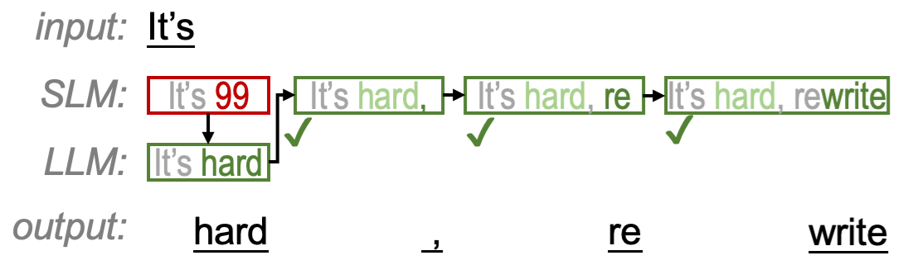
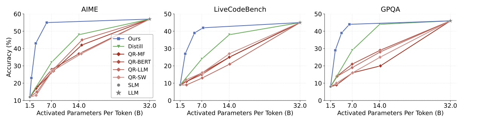

Efficiently Navigating Divergent Reasoning Paths with Small-Large Model Token Routing. Let small models follow large models' reasoning paths by correcting only the divergent tokens.
The Challenge
Small models are fast but make mistakes. What if we could get the best of both worlds?
Fast generation
Limited accuracy
Best of both worlds
Smart token routing
Accurate reasoning
Slow & expensive
The Discovery
We discovered that only a small fraction of tokens actually diverge reasoning paths between large and small models.
Interactive Demo
See how R2R intelligently routes tokens between models in real-time.
Hover over blue or red tokens to see why the router made that decision
How It Works
R2R uses a lightweight neural router trained on automatically generated token-level labels to decide which tokens need the large model's attention.

Performance
R2R advances the Pareto frontier of test-time scaling efficiency across AIME, GPQA, and LiveCodeBench.
*Cost = output tokens × activated parameters (in billions). Lower is better.

R2R consistently advances the Pareto frontier across AIME, GPQA, and LiveCodeBench benchmarks.
Citation
If you find R2R useful for your research, please consider citing our paper.
@article{fu2025r2r,
title={R2R: Efficiently Navigating Divergent Reasoning Paths with Small-Large Model Token Routing},
author={Fu, Tianyu and Ge, Yi and You, Yichen and Liu, Enshu and Yuan, Zhihang and Dai, Guohao and Yan, Shengen and Yang, Huazhong and Wang, Yu},
journal={arXiv preprint arXiv:2505.21600},
year={2025}
}